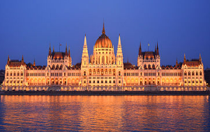
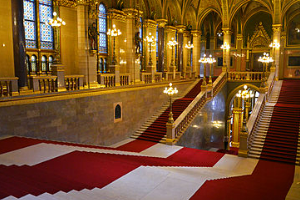
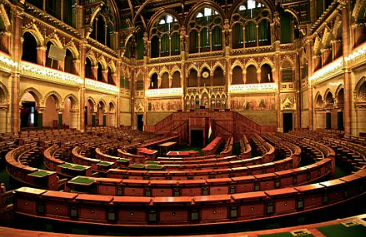

Az, hogy a magyar országgyűlés saját épületet kapjon, már a 19. század első felében felmerült, mivel Pozsony után hol a Pesti Vigadóban, hol a Nemzeti Múzeumban gyűlésezett.[1] 1840 körül Pollack Mihály tervezett ugyan egy reneszánsz stílusú épületet József nádor megbízására, de abból végül semmi sem lett. 1844-ben pályázatot írtak ki a leendő épületre, melyet a mai Erzsébet tér helyére terveztek felépíteni. A beérkezett 42 pályamű elbírálását azonban megakasztotta az 1848–49-es forradalom és szabadságharc, a tervek nagy része időközben el is veszett. 1861-ben került ismét terítékre egy ideiglenesnek szánt épület kérdése. Építése 1865-ben kezdődött el Ybl Miklós tervei alapján a mai Bródy Sándor utcában. Alig tizenegy hónap alatt készült el az épületet, amiben ma a Budapesti Olasz Kultúrintézet működik. Az állandó épület tervpályáztatására tizenöt évvel később, 1880-ban került sor.

Az Országház építésének feltétele volt, hogy kizárólag hazai építőanyagokat használjanak fel. Kivétel a főlépcső mellett található nyolc, egyenként hat méter magas márványmonolit, amelyet Svédországból hozattak (összesen 12 ilyen oszlop készült, a másik négy a londoni Parlamentben található). Az építkezés 1885-től 1904-ig tartott, azaz a tervező az épület teljes befejezését már nem érhette meg. Az első kapavágás 1885. október 12-én történt a Tömő-tér talaján, az építkezés során tizenhét éven keresztül átlagosan ezer ember dolgozott, 176 000 köbméternyi földet mozgattak meg; 40 millió téglát, félmillió díszkövet, 40 kg aranyat használtak fel.

Az Országház elrendezése teljesen szimmetrikus, az épület ugyanis kétkamarás országgyűlés számára készült 1896-ban. Az északi szárnyban a felsőház, a déli szárnyban az alsóház ülésterme kapott helyet. A két ülésterem tükörképe egymásnak. A parlamenti ülésekre ma az alsóházi termet használják, a felsőházi terem látogatható turisták számára, illetve frakcióüléseket, konferenciákat és fogadásokat tartanak benne. Érdekesség, hogy az alsóházi társalgóban a padlószőnyeg piros, a felsőháziban viszont kék, lévén a felsőház tagjai hagyományosan nemesek voltak, akikről azt tartották, hogy kék a vérük.
